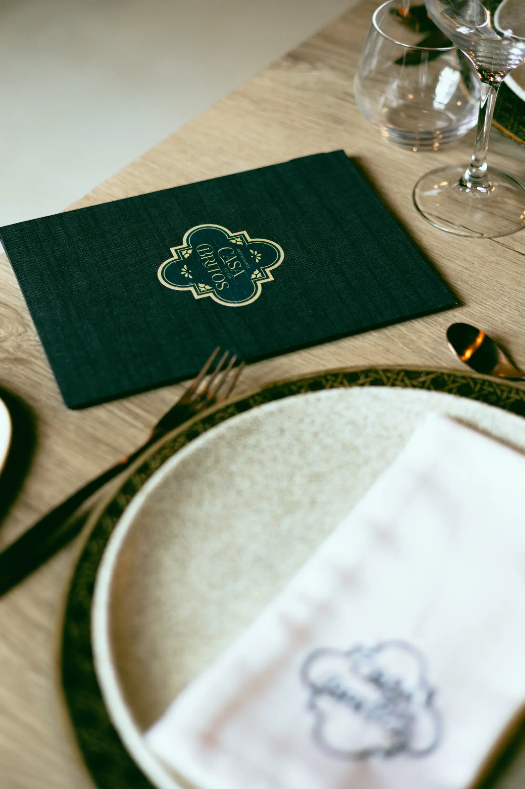

La carta
De la tierra, del mar y de la brasa. Pregunta por las sugerencias del día y por la información de alérgenos.

Entrantes de la tierra
Ibérico extremeño de bellota y quesos para abrir la mesa.

¿Te guardamos la mesa?
Las reservas se hacen solo por teléfono. Si quieres arroz, dínoslo al reservar.
Abrimos de jueves a domingo
Horario y grupos